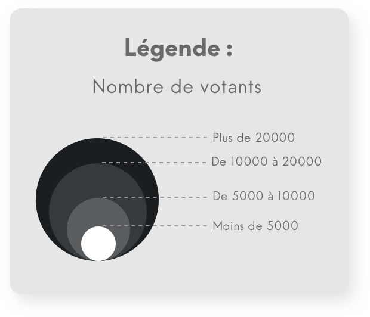

QU'EST-CE-QU'UNE COMMUNE MIROIR ?
Les communes « miroir » sont des communes spéciales et uniques.
Elles sont le reflet de la population nationale. Elles peuvent prédire les résultats des votes des élections présidentielles car elles ont + ou - 2% de différence avec les résultats finaux.
Un coup de chance ? Non !
Sur les trois dernières présidentielles (2002, 2007, 2012), elles arrivent à obtenir les mêmes résultats et dans le bon ordre. Tiercé gagnant !
Elles sont le reflet de la population nationale. Elles peuvent prédire les résultats des votes des élections présidentielles car elles ont + ou - 2% de différence avec les résultats finaux.
Un coup de chance ? Non !
Sur les trois dernières présidentielles (2002, 2007, 2012), elles arrivent à obtenir les mêmes résultats et dans le bon ordre. Tiercé gagnant !
Résultats nationaux aux présidentielles
- Parti Sociale
- UMP
- Front National
- Parti Sociale
- UMP
- Front National
Qui sont les communes miroirs ?
Gruchet-la-Valasse (76)
Normandie
3 113 habitants
Normandie
3 113 habitants
Guichainville (27)
Normandie
2 557 habitants
Normandie
2 557 habitants
Louviers (27)
Normandie
48 592 habitants
Normandie
48 592 habitants
Gervey (21)
Bourgogne Franche-Comté
3 082 habitants
Bourgogne Franche-Comté
3 082 habitants
Essey-les-Nancy (54)
Grand Est
8 688 habitants
Grand Est
8 688 habitants
Lèves (28)
Val-de-Loire
5 671 habitants
Val-de-Loire
5 671 habitants
Roanne (42)
Rhône-Alpes
35 200 habitants
Rhône-Alpes
35 200 habitants
Wattignies (59)
Haut-de-France
14 190 habitants
Haut-de-France
14 190 habitants
La Chapelle-Saint-Mesmin (45)
Val-de-Loire
10 117 habitants
Val-de-Loire
10 117 habitants
Chaumont (52)
Grand Est
22 674 habitants
Grand Est
22 674 habitants
Riorges (42)
Rhône-Alpes
10 741 habitants
Rhône-Alpes
10 741 habitants
Perrigny (39)
Bourgogne Franche-Comté
1 529 habitants
Bourgogne Franche-Comté
1 529 habitants
Maintenon (28)
Val-de-Loire
4 296 habitants
Val-de-Loire
4 296 habitants
Reims (51)
Grand Est
319 059 habitants
Grand Est
319 059 habitants
Saint-Germain-Les-Arpajon (91)
Ile-de-France
9 956 habitants
Ile-de-France
9 956 habitants
Voici les résultats des 15 communes
« miroirs » françaises.
Elles sont calculées par rapport aux trois dernières présidentielles à +/- 2 % d’exactitude, pour les premiers tours.
Faites vous partie de l’une d’entre elles ?

REMERCIEMENTS
AU COEUR DE CE PROJET
PARTENAIRES